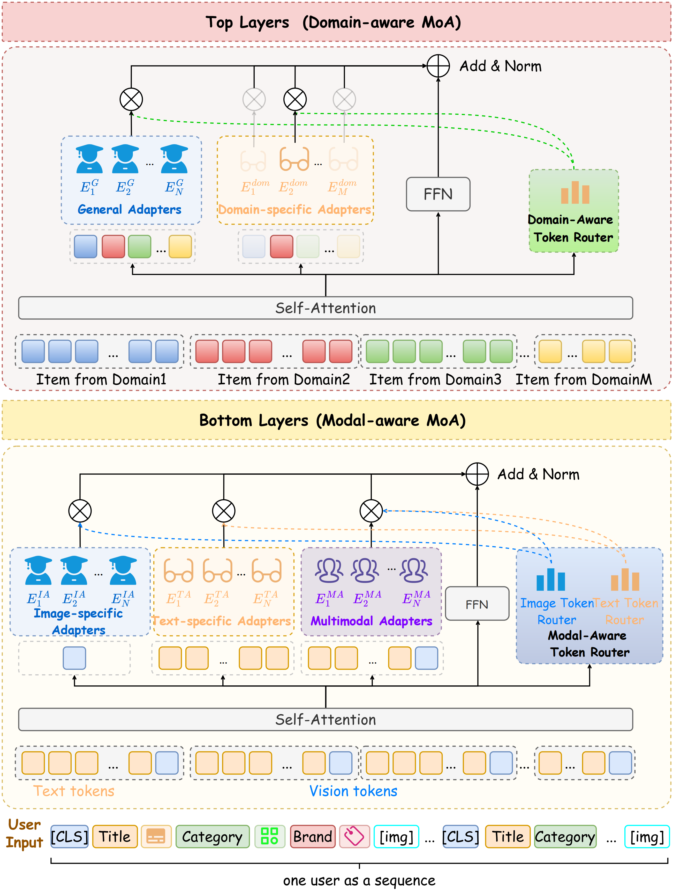
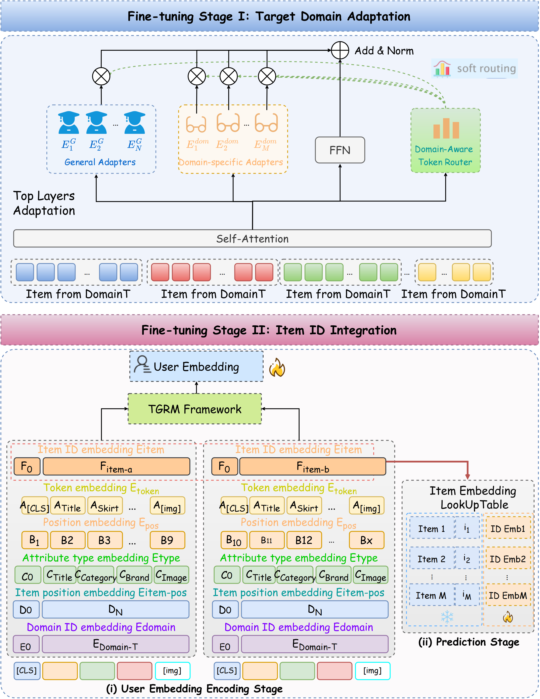
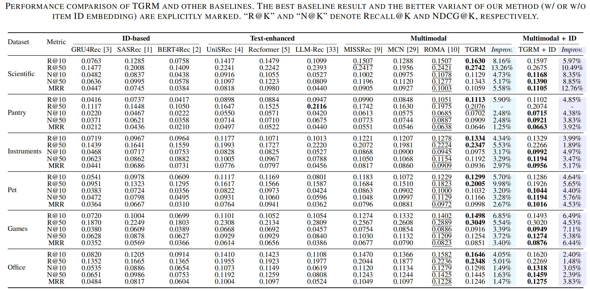

Modality-Aware Routing
Separates textual, visual, and multimodal token spaces to reduce textual dominance and preserve visual signals.
Recent multimodal sequential recommendation methods increasingly leverage pre-trained language models to improve cross-domain generalization. However, their potential is heavily constrained by dual representation conflicts: the intra-item conflict caused by token-level modality imbalance that statistically marginalizes visual signals, and the inter-item conflict stemming from the entanglement of domain-invariant and domain-specific knowledge during isolated pre-training. To tackle these issues, we present TGRM, a Token-Granular Routing framework for Multimodal cross-domain sequential recommendation. TGRM synergizes modality-aware representation learning to establish independent modality-specific spaces and alleviate textual dominance, with domain-aware sequential modeling to explicitly disentangle transferable behavioral invariants from domain-dependent patterns. Furthermore, an interleaved-domain pre-training strategy coupled with semantic-ID joint fine-tuning breaks the constraints of domain isolation, enabling the effective capture of holistic cross-domain user trajectories.
Extensive experiments on Amazon Review benchmarks and a large-scale industrial e-commerce dataset from JD.com show that TGRM consistently outperforms state-of-the-art methods, yielding relative improvements of 3%–13% across Recall, NDCG, and MRR and validating its effectiveness and practical applicability.


Separates textual, visual, and multimodal token spaces to reduce textual dominance and preserve visual signals.
Disentangles transferable behavioral invariants from domain-specific preference patterns.
Models chronological cross-domain trajectories instead of only relying on isolated single-domain sequences.
Integrates semantic item representations with item IDs for target-domain adaptation.
TGRM achieves consistent gains over ID-based, text-enhanced, and multimodal baselines across six target domains.

To evaluate practical scalability, we construct a large-scale industrial benchmark from JD.com. User view, cart, and order logs from the past six months are treated as three heterogeneous behavior domains, each containing approximately 20M interaction sequences after preprocessing.
TGRM is jointly pre-trained on these three domains using BGE-M3 as the backbone to support Chinese e-commerce content and long-token encoding. The inferred multimodal user/item representations are compressed into 256-dimensional embeddings and injected into an existing industrial multi-scenario multi-task ranking model for offline evaluation with CTCVR GAUC.
| Scenario | Production Baseline GAUC | TGRM ΔGAUC |
|---|---|---|
| Scenario A | 0.642850 | +1.1095 pp |
| Scenario B | 0.662526 | +1.2606 pp |
| Scenario C | 0.659078 | +1.5374 pp |
| Scenario D | 0.721838 | +0.7542 pp |
| Average | 0.671573 | +1.1654 pp |
Sampled cases from the target domains of the Amazon Review dataset are visualized below, including local product images, item metadata, timestamps, ground-truth ranks, and top-k model predictions.
Target Domain User Sequence
Place case_study_export_wtime_v1e3_cover5.json
and images/ under
case_study/Scientific/.